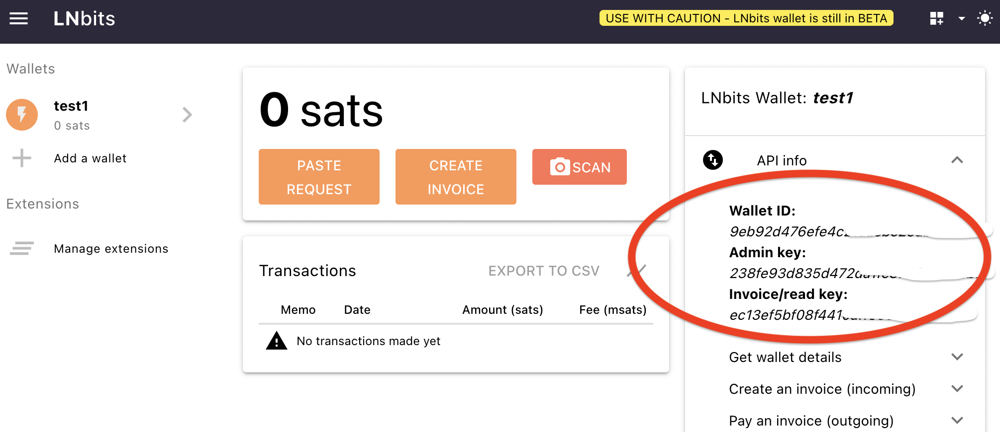

How To Guides
This is a brief guide on how to use the pylnbits library. First create an an account on your LNBits instance by visiting the main page and naming your wallet. Be sure to bookmark the link to be able to get access in the future. If you are not familiar with LNBits, please take the time to familiarize yourself with how user accounts work and how invoices are created and paid on LNBits first.
Next, click on enable extensions in the side navigation bar on your LNBits account. Enable the extensions that you want to use. Extension use is optional, and is not required for generating invoices or receiving payments. The pylnbits library currently only supports the following extensions from LNBits:
- User Wallet (not an extension, created initially)
- Invoices
- User Manager
- LNURLp
- LNURLw
- LndHub
Getting Started
Use version at least python3.8
Install from source
git clone https://github.com/lightningames/pylnbits
cd pylnbits
python3 -m venv venv
source venv/bin/activate
pip install -r requirements.txt
pip install -e .
Release Note
Current pylnbits release is 0.0.8
Resolved Bugs
- UnboundLocalError when config_file is None
- /api/v1/payments/decode expects the body as json
- get_url returns the dict after extracting the json attribute therefore this fails in the UserWallet class.
PyPi release
https://pypi.org/project/pylnbits/
pip install pylnbits
Set up your Config
In your LNBits account, click on the API info tab. You should see Wallet ID, Admin Key and Invoice/read key.

First create a config.yml file, copy the Keys from LNBits with your values. There is a sample config_sample.yml file in the pylnbits source directory.
config.yml
lnbits_url: "https://<your lnbits domain here, e.g. https://legend.lnbits.com>"
# get api_keys from LNbits Wallet
in_key: "<your Invoice Key here>"
admin_key: "< Your Admin Key here>"
Example Code
Sample code for User Wallet
The following is sample code that uses config.yml in your current directory for calling methods from the user wallet.
This Example code runs test for the following:
- INITIALIZE the pylnbits with your config file
- GET wallet details
- CHECK an invoice payment hash
- CREATE an invoice
- PAY an invoice (Bolt11)
Replace the sample data with your data, e.g. bolt and payment_hash variables
import asyncio
from aiohttp.client import ClientSession
from pylnbits.config import Config
from pylnbits.user_wallet import UserWallet
async def main():
# INITIALIZE the pylnbits with your config file
c = Config(config_file="config.yml")
url = c.lnbits_url
print(f"url: {url}")
print(f"headers: {c.headers()}")
print(f"admin_headers: {c.admin_headers()}")
async with ClientSession() as session:
# GET wallet details
uw = UserWallet(c, session)
userwallet = await uw.get_wallet_details()
print(f"user wallet info : {userwallet}")
# CHECK an invoice payment hash
payment_hash = "edefef3766537446c70e51af9b414fb3b319baf515f1ff9852c0289eae3665a1"
res = await uw.check_invoice(payment_hash)
print(f"check invoice response: {res}")
# CREATE an invoice
res = await uw.create_invoice(False, 150, "testcreatetwo", "http://google.com")
print(f'\nCreate invoice RESPONSE: {res}\n\n')
# PAY an invoice - add balance and check
# replace the bolt below with your bolt11
bolt = "lnbc800n1ps23r2dpp5ahh77dmx2d6yd3cw2xheks20kwe3nwh4zhcllxzjcq5fat3kvkssdqsd9h8vmmfvdjk7mn9cqzpgrzjq02snzwz4petaly54yzjkm358rqa5as9hkgydjvxxmvlpuk6dfd9cz0y2cqq0qsqqyqqqqlgqqqqqqgq9qsp5cut63ftfcffwkrr2w9r50w5e40m93k3er75mc70ysxps7yercs9s9qyyssqs7qk3cz97nm5m6ehzedcxhttx87l7x5kk38gvwkzzv4lhrhddtqq3sk43nnvsddagf36ledw9vhlpqxuu5s53pj6sz926mwqxf8chsgp2m9j8w" # noqa
body = {"out": True, "bolt11": bolt}
res = await uw.pay_invoice(True, bolt)
print(res)
loop = asyncio.get_event_loop()
loop.run_until_complete(main())
Where to get LNBits API details
For more details on what values need to be passed to the above pylnbits example, please check the LNBits API docs, which should be located on the LNBits website in the section below your the Admin and Invoice Key. Expand the tabs as shown in the image below.

Sample code for LNURLp
The following is sample code that uses config.yml in your current directory for calling methods from the LNURLp extension
# test lnurlp pay link
import asyncio
from aiohttp.client import ClientSession
from pylnbits.config import Config
from pylnbits.lnurl_p import LnurlPay
# Example code for testing LNURLp
async def main():
c = Config(config_file="config.yml")
url = c.lnbits_url
print(f"url: {url}")
print(f"headers: {c.headers()}")
print(f"admin_headers: {c.admin_headers()}")
async with ClientSession() as session:
lw = LnurlPay(c, session)
# list links
links = await lw.list_paylinks()
print("list all links: " , str(links), "\n\n")
# get pay link
pay_id = links[0]['id']
print(f'pay_id for get_link: {pay_id}')
getlink = await lw.get_paylink(pay_id=str(pay_id))
print("get pay link: ", str(getlink), "\n")
# create pay link
body = {"description": "auto pay link",
"amount": 100,
"max": 10000,
"min": 100,
"comment_chars": 100}
newlink = await lw.create_paylink(body=body)
print(f"create pay link with body: {body}, result link: {newlink} \n")
pay_id = newlink['id']
# update newly created link above
# all body fields are required
body = {"description": "update auto paylink",
"amount": 150,
"max": 10000,
"min": 100,
"comment_chars": 100}
update_result = await lw.update_paylink(pay_id=str(pay_id), body=body)
print(f'update pay link with intial id: {pay_id}, body: {body} \n result: {update_result}\n\n')
# delete above created link
delete_result = await lw.delete_paylink(pay_id=str(pay_id))
print(f'delete pay link id: {pay_id}, result: {delete_result}\n\n')
loop = asyncio.get_event_loop()
loop.run_until_complete(main())
More Examples
More example code can be found in the tests directory as shown in the Project Layout section.